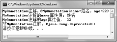

8.4 自定义注解
本节会介绍自定义注解。不过要想让自定义注解真正起作用，必须要了解Java提供的四个元注解（用于修饰注解的注解）@Target、@Retention、@Documented和@Inherited。
8.4.1 自定义注解
注解之所以强大，能被众多框架所使用的主要原因在于，它可以允许程序员自定义注解，使Java程序变成自描述的。注解的语法形式和接口差不多，只是在interface前面多了一个“@”符号。
public @interface MyAnnotation{
}
上面的代码是一个最简单的注解，这个注解没有属性。我们可以在自定义注解时定义属性，在注解类型的定义中以无参方法的形式来声明，其方法名和返回值分别定义了该属性的名字和类型，其代码如下：
public @interface MyAnnotation{
//定义一个属性value
String value();
}
可以按如下格式使用MyAnnotation注解：
public class TestAnnotation{
//如果没有写属性名，而这个注解又有value属性，则将这个值赋给value属性
//@MyAnnotation("good")
@MyAnnotation(value = "good")
public void getObjectInfo(){
}
}
接下来修改自定义注解MyAnnotation，使其含两个属性，具体代码如下：
public @interface MyAnnotation{
//定义两个属性name和age
String name();
int age();
}
在注解中可以定义属性，也可以给属性赋默认值，具体代码如下：
public @interface MyAnnotation{
//定义带默认值的属性
String name() default "姓名";
int age() default 22;
}
定义了注解之后，接下来就可以在程序中使用注解，具体代码如下：
public class TestAnnotation{
//使用带属性的注解时，需要为属性赋值
@MyAnnotation(name = "柳海龙",age = 24)
//@MyAnnotation
public void getObjectInfo(){
}
}
请注意注释的描述，使用带属性的注解时，需要给属性赋值。不过如果在定义注解时给属性赋了默认值，则可使用不带属性值的注解，也就是让注解使用自己的默认值。
8.4.2 元注解
上一小节虽然学习了自定义注解，但是肯定有不少人觉得学完之后，心里空空的，不知道自定义注解到底有什么用？下面的内容就是来解决这个问题的。
在自定义注解时，注解看起来和类、接口比较类似，尤其看起来更像接口。注解可以理解为和接口一样，是程序的一个基本组成部分。既然可以对类、接口、方法和属性等进行注解，那么当然也可以对注解进行注解。
使用不同注解对注解进行注解的方法，和对类、接口进行注解的方法一样，所不同的是，Java为注解单独提供了四种元注解，即@Target、@Retention、@Documented和@Inherited，下面分别介绍这四种元注解。
8.4.3 @Target注解
@Target元注解很容易理解，Target中文含义为目标，使用@Target注解的目的是用于指定被修饰的注解能用于修饰哪些程序元素。如果注解定义中不存在@Target元注解，则此注解可以用在任一程序元素上，如果存在这样的元注解，则编译器强制实施指定的使用限制。
此注解类型有唯一的value作为成员变量，其定义为public abstract ElementType[] value。
接下来看这样一个案例，将之前自定义的注解用@Target进行注解，以限制此注解只能使用在属性上。此时如果将此注解使用在方法上，编译器会报出“注释类型不适用于该类型的声明”的错误。案例具体代码如下：
import java.lang.annotation.*;
//限制此注解只能使用在属性上
@Target({ElementType.FIELD})
public @interface MyAnnotation{
String name() default "姓名";
int age() default 22;
}
public class TestAnnotation{
//在方法上使用自定义注解
@MyAnnotation
public void getObjectInfo(){
}
}
@Target注解的属性value可以为以下值，被@Target注解的注解只能用来注解对应的目标。
ElementType.ANNOTATION_TYPE：注解类型声明。
ElementType.CONSTRUCTOR：构造方法声明。
ElementType.FIELD：字段声明（包括枚举常量）。
ElementType.LOCAL_VARIABLE：局部变量声明。
ElementType.METHOD：方法声明。
ElementType.PACKAGE：包声明。
ElementType.PARAMETER：参数声明。
ElementType.TYPE：类、接口（包括注解类型）或枚举声明。
8.4.4 @Retention注解
@Retention 元注解用于指定被修饰的注解可以保留多长时间。如果注解定义中不存在 @Retention元注解，则保留策略默认为RetentionPolicy.CLASS。
@Retention包含一个RetentionPolicy类型的value属性，使用此注解时必须为该value属性指定值。@Retention注解的属性value允许的值及含义如下。
RetentionPolicy.CLASS：编译器将把注解记录在class文件中，当运行Java程序时，虚拟机不再保留注解。
RetentionPolicy.RUNTIME：编译器将把注解记录在class文件中，当运行Java程序时，虚拟机保留注解，程序可以通过反射获取该注解。
RetentionPolicy.SOURCE：编译器将直接丢弃被修饰的注解。
接下来通过一个案例来演示通过反射获取注解，具体代码如下。案例中提供了较为详细的注释，请大家认真阅读。
import java.lang.annotation.*;
@Target({ElementType.TYPE,ElementType.FIELD,ElementType.METHOD
,ElementType.PARAMETER,ElementType.CONSTRUCTOR,ElementType.LOCAL_VARIABLE})
//当运行Java程序时，虚拟机保留注解
@Retention(RetentionPolicy.RUNTIME)
public @interface MyAnnotation{
String name() default "姓名";
int age() default 22;
}
import java.lang.annotation.Annotation;
public class TestAnnotation{
public static void main(String[] args) throws SecurityException,
NoSuchMethodException, ClassNotFoundException {
TestAnnotation ta = new TestAnnotation();
ta.getObjectInfo();
}
@MyAnnotation
@Deprecated
public void getObjectInfo() throws ClassNotFoundException,
SecurityException, NoSuchMethodException{
//利用反射机制获取注解
Annotation[] arr = Class.forName("TestAnnotation")
.getMethod("getObjectInfo").getAnnotations();
//遍历每个注解对象
for(Annotation an:arr){
if(an instanceof MyAnnotation){//如果注解是MyAnnotation类型
System.out.println("MyAnnotation注解：" + an);
System.out.println("MyAnnotation注解的name属性值："+((MyAnnotation)an).
name());
System.out.println("MyAnnotation注解的age属性值："+((MyAnnotation)an).age());
}else{
System.out.println("非MyAnnotation注解：" + an);
}
}
}
}
代码中getObjectInfo()方法有两个注解，@MyAnnotation和@Deprecated，其中，自定义注解@MyAnnotation的元注解@Retention的值为RetentionPolicy.RUNTIME，含义为当运行Java程序时，虚拟机保留注解，所以在运行时可以通过反射机制获取该注解。程序运行结果如图8.3所示。@Deprecated为内建注解，通过运行结果可以看出@Deprecated的元注解@Retention的值也是RetentionPolicy.RUNTIME。

图8.3 通过反射机制获取注解
8.4.5 @Documented注解
一看这个元注解的名字，就知道它一定和文档有关。在默认的情况下使用javadoc工具自动生成文档时，注解将被忽略掉。如果想在文档中也包含注解，必须使用@Documented 为文档注解。@Documented注解类型中没有成员变量。如果定义注解时使用了@Documented修饰，则所有使用该注解修饰的程序元素的API文档中都将包含该注解说明。
//@Documented
public @interface MyAnnotation{
String name() default "姓名";
int age() default 22;
}
@MyAnnotation
public class TestAnnotation{
}
使用javadoc生成文档，产生的文档对TestAnnotation类的描述如下：
class TestAnnotation extends java.lang.Object
如果取消对@Documented的注释，使其起作用，将会出现另一个结果：
@MyAnnotation
class TestAnnotation extends java.lang.Object
8.4.6 @Inherited注解
继承是面向对象的特性之一，Java是典型的面向对象语言，所以继承是Java语言典型的特性。前面讲过，注解是程序的一个基本组成部分，那么父类的注解是否被子类继承呢？默认情况下，父类的注解不被子类继承，如果要想继承父类注解，就必须使用@Inherited元注解。接下来通过下面的三小段代码，介绍@Inherited注解的含义。
import java.lang.annotation.*;
@Inherited
public @interface MyAnnotation{
String name() default "姓名";
int age() default 22;
}
@MyAnnotation
public class Vehicle
{
public void drive()
{
//省略若干代码
}
}
public class Truck extends Vehicle
{
//省略若干代码
}
通过以上的代码，Truck类和Vehicle类一样都被@MyAnnotation注解了。